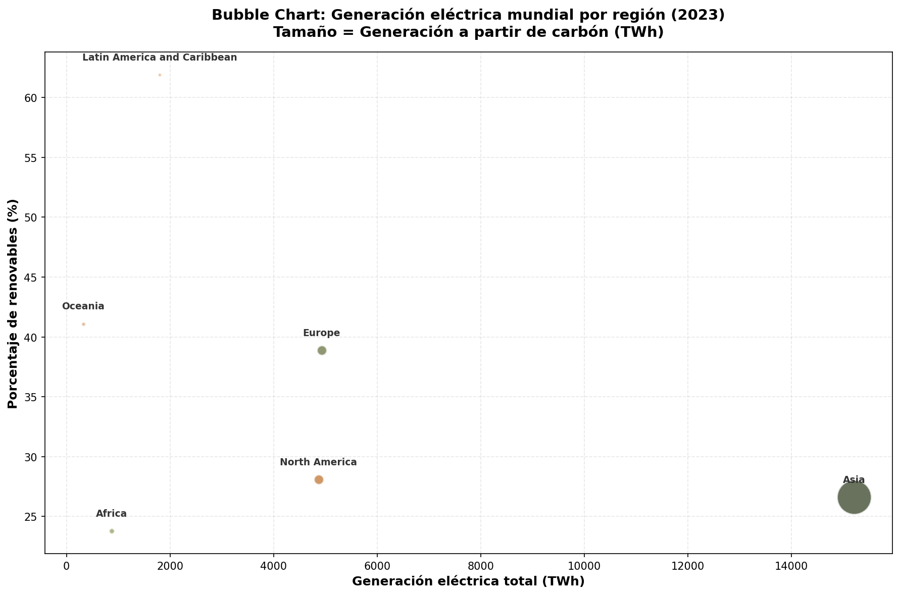
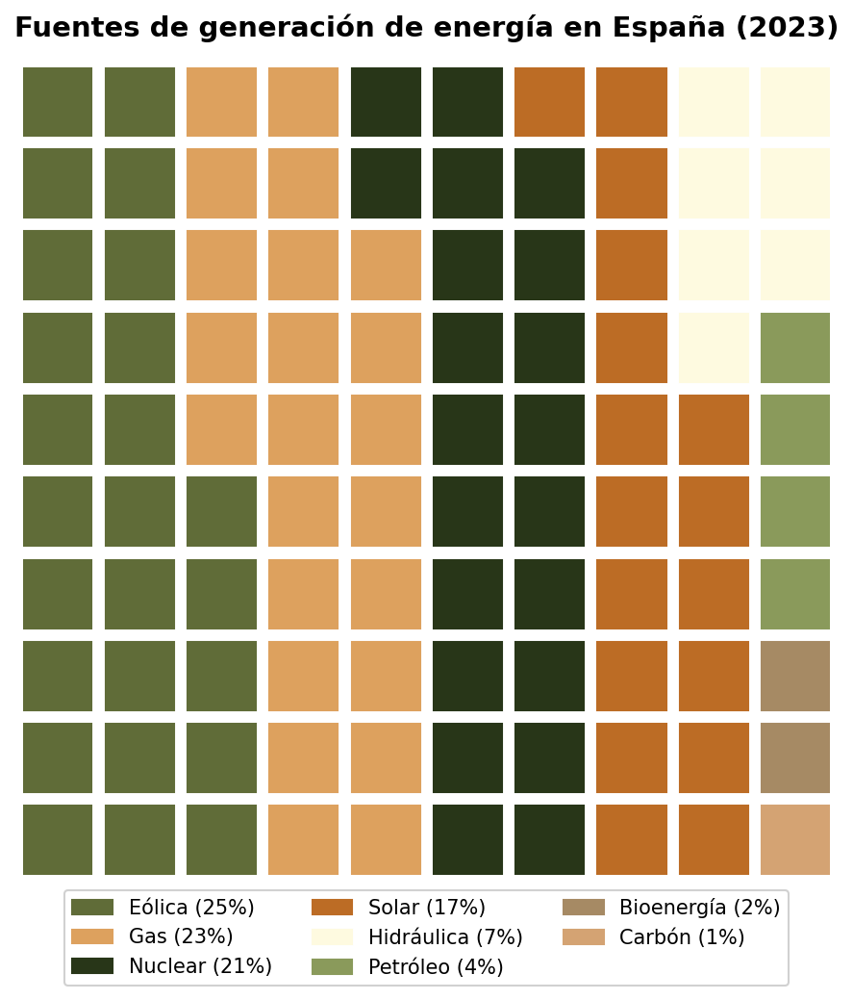
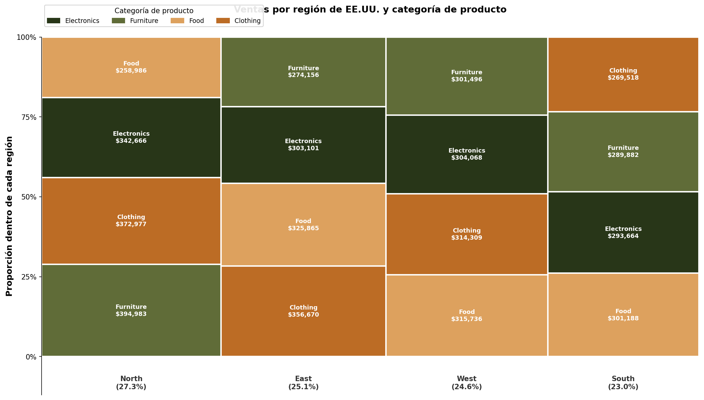

En esta práctica saldremos de nuestra zona de confort y descubriremos 3 técnicas de visualización nuevas. En mi caso, las visualizaciones asignadas son las siguientes: Gráfico de Burbujas (Bubble Chart), Gráfico de Gofre (Waffle Chart) y Gráfico de Marimekko (Marimekko Chart).
He creado todas las visualizaciones en Python usando las librerías matplotlib y pywaffle. Las paletas de colores empleadas han sido obtenidas de Coolors: Paleta principal.
Las fuentes de datos consultadas han sido dos: un dataset de Kaggle — Global Energy Mix & Generation Sources sobre generación eléctrica mundial por fuente (usado tanto para el bubble chart como para el waffle chart), y un dataset de ventas de una tienda de Kaggle.
Un gráfico de burbujas es un gráfico de varias variables que es un cruce entre un diagrama de dispersión y un gráfico de área proporcional. Al igual que un diagrama de dispersión, utiliza un sistema de coordenadas cartesianas donde los ejes X e Y son variables separadas. Sin embargo, a cada punto se le asigna una etiqueta o categoría, y una tercera variable se representa mediante el área de su círculo. Los colores también se pueden utilizar para distinguir entre categorías o para representar una variable adicional.
Origen: Sus raíces se remontan al diagrama de dispersión popularizado por Francis Galton (década de 1870). El bubble chart se consolidó como tipo de gráfico independiente gracias a Hans Rosling, médico y estadístico sueco, quien en su charla TED de 2006 utilizó burbujas animadas para mostrar tendencias de desarrollo global con el software Trendalyzer, base de la Fundación Gapminder.
Los gráficos de burbujas se utilizan para comparar y mostrar relaciones entre círculos categorizados, mediante el uso de posicionamiento y proporciones. Demasiadas burbujas pueden hacer que el gráfico sea difícil de leer, por lo que tienen una capacidad limitada de datos. Esto puede remediarse con interactividad: hacer clic o pasar sobre burbujas para mostrar información oculta, o filtrar categorías. Los tamaños de los círculos deben dibujarse basándose en el área del círculo, no en su radio o diámetro, para evitar interpretaciones erróneas.

Un gráfico de gofre (waffle chart) muestra el progreso hacia un objetivo o un porcentaje de completitud. Consiste en una cuadrícula de celdas pequeñas del mismo tamaño, donde las celdas coloreadas representan los datos. Un gráfico puede contener una o varias categorías. Se pueden colocar múltiples waffle charts juntos para mostrar una comparación entre diferentes conjuntos de datos.
Origen: Técnica moderna sin un autor único identificado. Emergió de la comunidad de visualización de datos como alternativa a los gráficos de sectores (pie charts), cuyas limitaciones perceptivas están ampliamente documentadas. También se conoce como square pie chart o percentage grid.
Trabaja con datos categóricos que representan partes de un todo. Para emular la vista porcentual de un pie chart se usa una cuadrícula de 10×10 donde cada cuadrado representa el 1% del total. El número ideal de categorías es reducido (2 a 6). Se complica con muchas categorías y pierde precisión con valores que no se ajustan a celdas enteras.

Un gráfico de Marimekko (también llamado Mekko chart) es un gráfico apilado bidimensional. Además de las alturas variables de los segmentos de un gráfico apilado convencional, un Marimekko también tiene anchos de columna variables. Los anchos de las columnas se escalan de modo que el ancho total coincida con el ancho deseado del gráfico. Se utiliza para comparaciones y para mostrar la relación de las partes con el todo.
Origen: Su nombre proviene de la empresa finlandesa de diseño Marimekko, famosa por sus estampados geométricos coloridos. Desde el punto de vista estadístico, su forma académica (el mosaic plot) se desarrolló en el ámbito del análisis de datos categóricos. Su popularización en consultoría estratégica y análisis de cuota de mercado se produjo a partir de los años 90.
Se necesitan dos variables categóricas y una numérica. Los valores deben ser positivos. El número óptimo de categorías es reducido (3 a 7) con pocas subcategorías (2 a 5). La percepción humana de áreas es limitada, lo que dificulta comparar rectángulos con distintas proporciones, y los segmentos no comparten línea base común.

Catálogo de Visualización de Datos — Gráfico de Burbujas
DataViz Project — Waffle Chart (Percentage Grid)